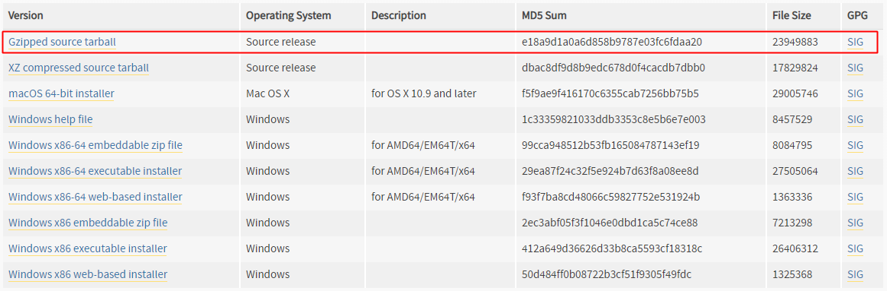
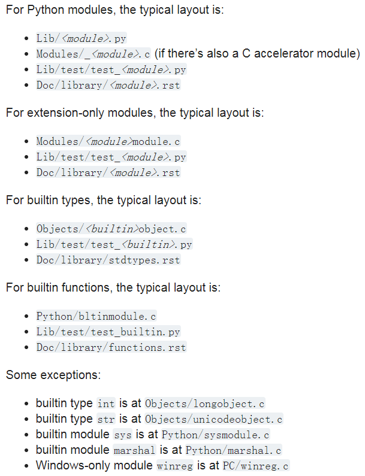
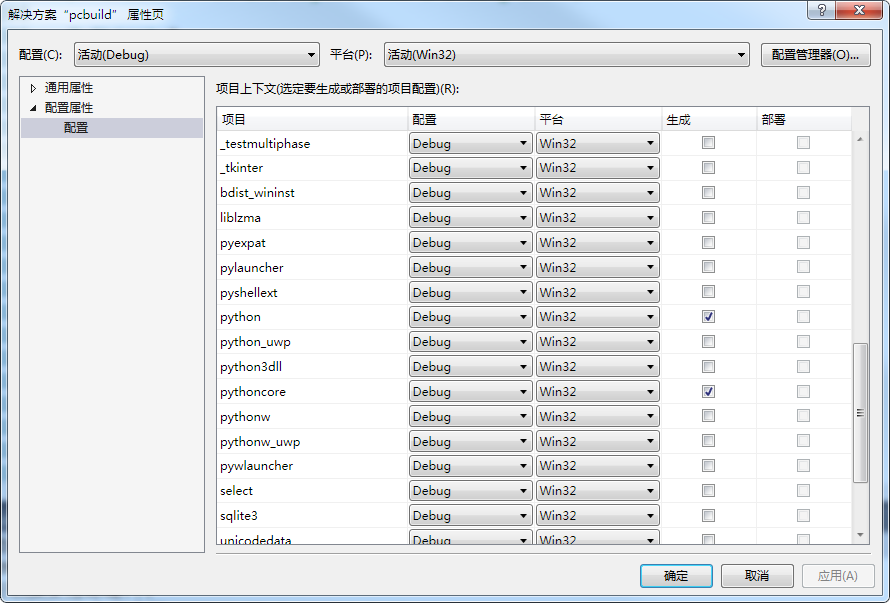
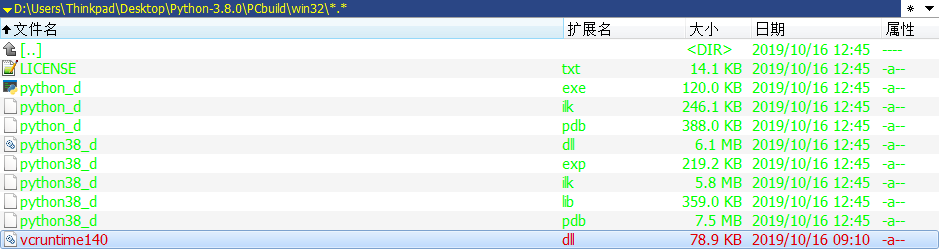
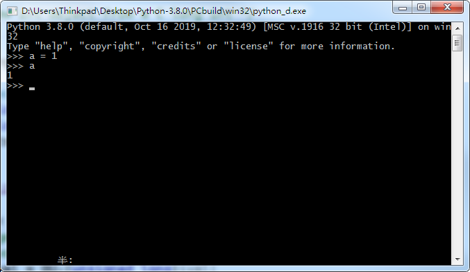
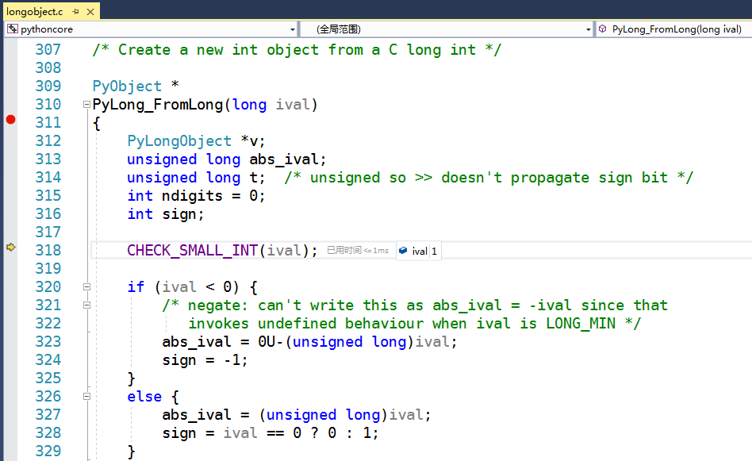
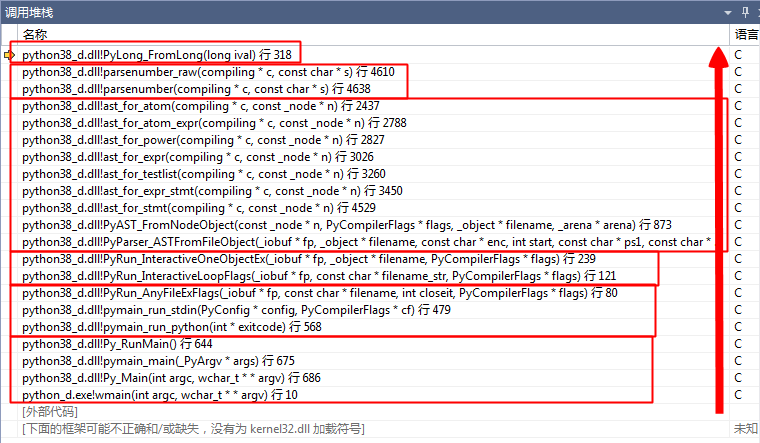

博客：blog.shinelee.me | 博客园 | CSDN
如果对Python源码感兴趣，那“窥探”其实现的最佳方式就是调教它，不，调试它。
Python的官方默认实现为CPython，即C语言实现（主要指解释器的实现，其他实现见Other Interpreter Implementations）。CPython的源代码可以从官网pyhton.org或者github.com/python/cpython获取，目前最新的稳定版本为3.8.0，于2019.10.14发布。这里，从官网 https://www.python.org/downloads/release/python-380/ 下载源码压缩包，如下图所示，

解压后，目录结构如下
{ Python-3.8.0 } » tree -d -L 1 .
.
├── Doc # rst(reStructuredText)格式官方文档，用其生成https://docs.python.org/
├── Grammar # Python的EBNF(Extended Backus–Naur form)语法定义文件
├── Include # .h 头文件
├── Lib # .py 纯Python实现的标准库
├── m4 # ？
├── Mac # Mac-specific code，支持MacOS
├── Misc # Things that do not belong elsewhere.
├── Modules # C实现的标准库，内含.c .asm .macros .h
├── Objects # 内置数据类型实现
├── Parser # Python语法分析器源码
├── PC # Windows-specific code，支持Windows
├── PCbuild # Windows生成文件，for MSVC
├── Programs # main函数文件，用于生成可执行文件，如python.exe的入口文件
├── Python # CPython解释器源码
└── Tools # 独立工具代码，used to maintain PythonCPython的源码组织结构如下，摘抄自CPython Source Code Layout，

源码文件分门别类存放，而且，无论是py实现的标准库、c实现的标准库、内置数据类型还是内置函数，在Lib/test/和Doc/library/目录下都有与之对应的test_x.py测试文件和rst文档文件（对于内置数据类型和函数，其文档集中保存在stdtypes.rst和functions.rst）。比如，内置类型int位于Objects/longobject.c文件中。
下面正式开始编译CPython。
据Compile and build on Windows，Python3.6及之后的版本可以使用VS2017编译，安装VS2017时，记得勾选 Python development 和 Python native development tools，有备无患。
安装好VS2017后，双击PCbuild/pcbuild.sln，打开解决方案。因为我们的关注点仅在Python内核和解释器部分，所以仅编译python和pythoncore，其他模块暂时忽略，具体地，

此时再“生成解决方案”，生成目录为PCbuild/win32，内容如下，含解释器python_d.exe和内核python38_d.dll，

接下来，将项目python设为启动项目（默认状态即是启动项目），点击调试，运行得到如下控制台，可以像平时使用python一样，与之交互。

如果想生成全部模块，需要运行PCbuild\get_externals.bat下载依赖，再编译，具体可参见Build CPython on Windows。
只要程序能运行起来，一切就好办了。凭借“宇宙最强IDE”，我们可以任性地设断点调试甚至修改代码。
F5重新启动调试，弹出控制台。在上面我们知道int类型位于Objects/longobject.c文件，打开文件，简单浏览后在函数PyObject * PyLong_FromLong(long ival)入口处打个断点。然后，在弹出的控制台中输入a = 1来创建int对象，回车，程序停在了断点处，查看变量ival的值为1——恰为我们输入的数值，这个函数会跟根据输入的C long int创建一个int对象，返回对象指针。

再来看看函数调用堆栈，如下图所示，

调用顺序从下至上，从中可以推断出，
int对象继续运行，弹出的控制台中光标前出现<<<，等待输入。这时如果我们点击调试中的停止按钮（全部中断），会发现程序停在Parser/myreadline.c文件_PyOS_WindowsConsoleReadline函数中的ReadConsoleW一行，
if (!ReadConsoleW(hStdIn, &wbuf[total_read], wbuflen - total_read, &n_read, NULL)) {
err = GetLastError();
goto exit;
}ReadConsoleW为WINAPI，详见ReadConsole function，其等待并读取控制台的输入，读取的字符保存在wbuf中。如果有输入，则进入上面的流程，解析→建立语法树→……
至此，我们揭开了Python面纱的一角——不过是一个可运行、可调试的程序而已（微笑）。